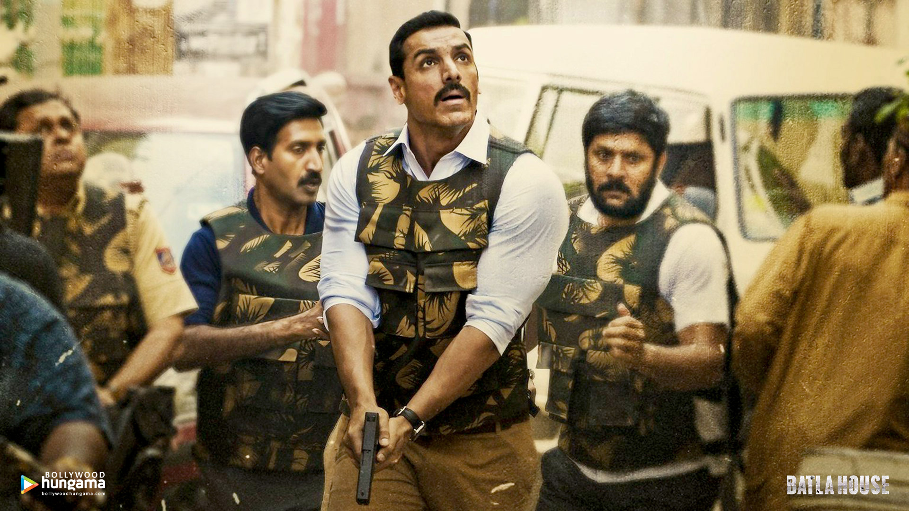
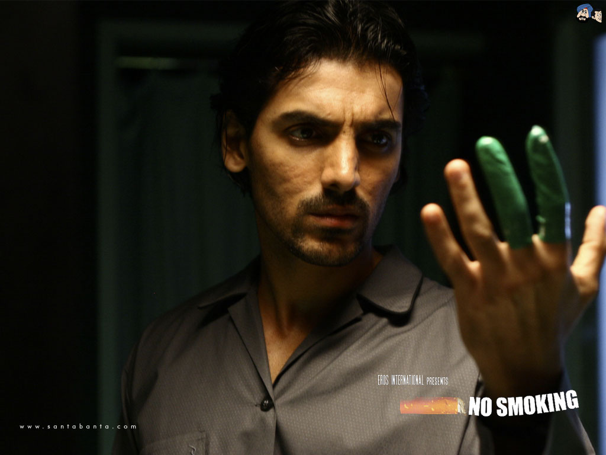
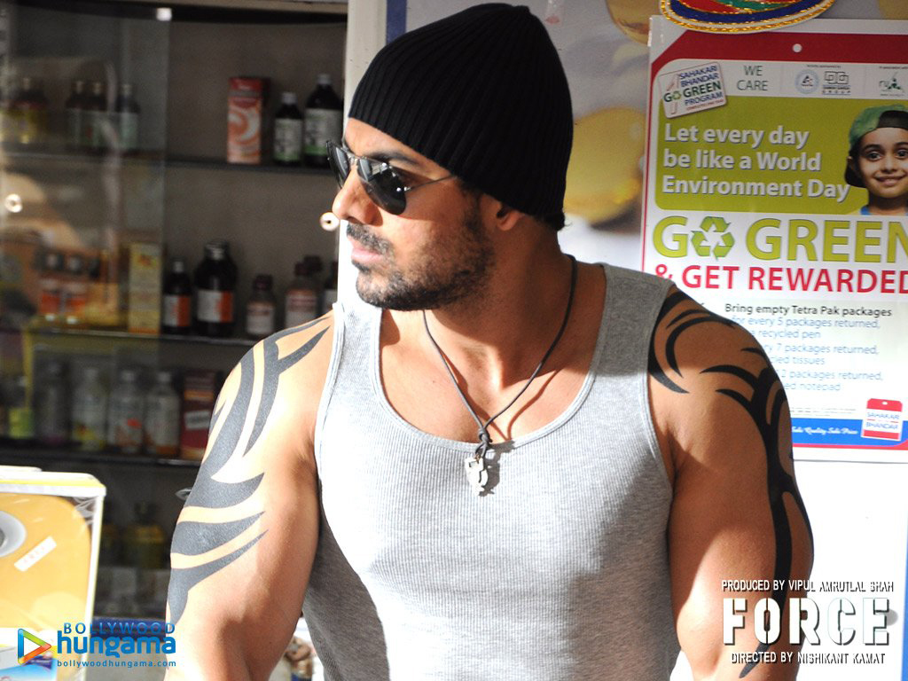

John Abraham (born 17 December 1972) is an Indian film actor, film producer and former model who appears in Hindi-language films. After modelling for numerous advertisements and companies, he made his Bollywood debut with Jism (2003),
which earned him the Filmfare Best Debut Award nomination.
This was followed by his first commercial success, Dhoom (2004).
He received two Filmfare Award nominations, for his negative roles in Dhoom,
and in Zinda (2006). He later appeared in the major critical success Water (2005).
He was nominated for a Filmfare Award for Best Supporting Actor for the film Baabul
(2006). Since then, Abraham has starred in many critically and commercially successful
films including Garam Masala (2005), Taxi No. 9211 (2006), Dostana (2008),
New York (2009), Housefull 2 (2012), Race 2 (2013), Shootout at Wadala (2013),
Madras Cafe (2013), Welcome Back (2015), Dishoom (2016), Parmanu (2018),
Satyameva Jayate (2018) and Batla House (2019), thus establishing himself as a
commercially successful actor of Hindi cinema.
In 2012, Abraham produced his first film Vicky Donor, which was a critical and
commercial success, and earned him a National Film Award for Best Popular
Film Providing Wholesome Entertainment. He then established his own production house,
John Abraham Entertainment. His second film as a producer was Madras Cafe,
which garnered critical acclaim. Beyond his acting career, he is the owner of the
Indian Super League football team NorthEast United FC. He has often performed
many dangerous stunts in his films. He is also a vegetarian, and is a strong advocate
for animal rights.
TOP HIT MOVIES
Name of Movie
Details Button
Madras Cafe
Batla House
No-Smoking
Force
Parmanu
Madras cafe
Madras Cafe is a bold film with no songs or masala gigs.
The John Abraham starrer is a brilliantly executed movie based on a true event.
Madras Cafe is a story about India's former prime minister's assassination in Madras and is a fast-paced thriller that keeps you glued to the screen until the last scene. John essayed the role of an Intelligence Indian Officer in Madras Cafe very convincingly. Directed by celebrated director Shoojit Sircar, Madras Cafe is a must-watch film.
Batla House

A riveting story about a decorated officer who struggles hard to work within the system, John Abraham's character in the film adopts some alternate ways to catch notorious fugitives. The thriller does not lose its pace at all. Backed with some brilliant action sequences,
Batla House is an excellent film by Nikhil Advani.
NO SMOKING

No Smoking, as the name suggests, is a tale about a chain smoker. In order to get off his habit, John Abraham's character in the film visits a rehab but then decides to leave. The story then takes an exciting turn as his family gets into trouble due to his habit. With money, cigarettes, and drama involved,
this John Abraham flick is a must-watch.
FORCE

Force is a 2011 Indian Hindi-language action thriller film directed by Nishikant Kamat, starring John Abraham, Genelia D'Souza and the debutant Vidyut Jammwal. It is a remake of Gautham Menon's successful 2003 Tamil film, Kaakha Kaakha Starring Suriya and Jyothika in lead and is about a dutiful cop who chases the capture of a dreaded gangster. The film released on 30 September 2011, and received mostly positive reviews upon release,. John Abraham's performance was also praised by public and critics. Its sequel Force 2 has been released in 2016, making it the first installment of the Force film series.
Parmanu
Force is a 2011 Indian Hindi-language action thriller film directed by Nishikant Kamat, starring John Abraham, Genelia D'Souza and the debutant Vidyut Jammwal. It is a remake of Gautham Menon's successful 2003 Tamil film, Kaakha Kaakha Starring Suriya and Jyothika in lead and is about a dutiful cop who chases the capture of a dreaded gangster. The film released on 30 September 2011, and received mostly positive reviews upon release,. John Abraham's performance was also praised by public and critics. Its sequel Force 2 has been released in 2016, making it the first installment of the Force film series.